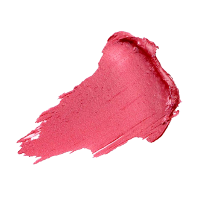
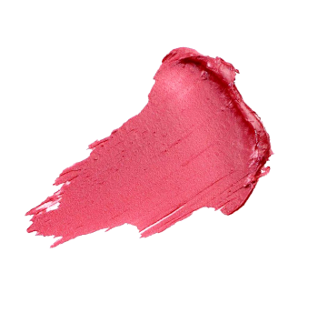
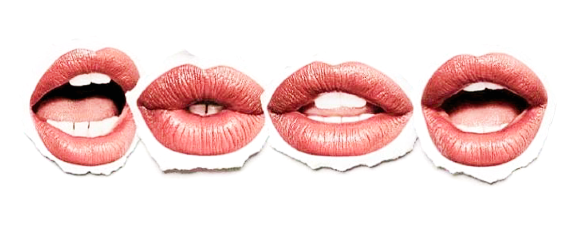
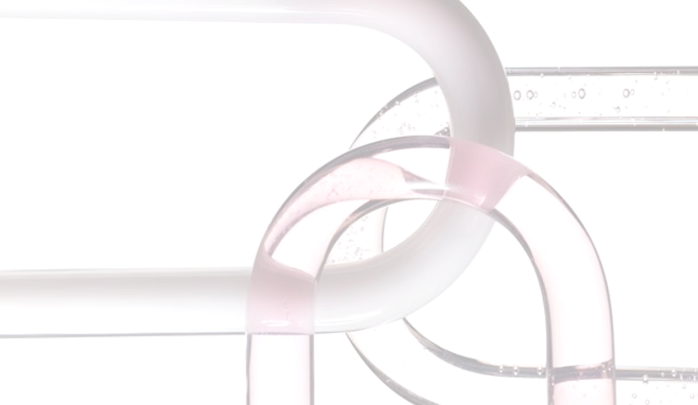
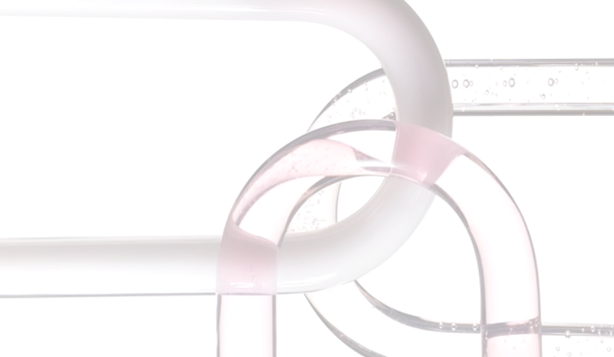
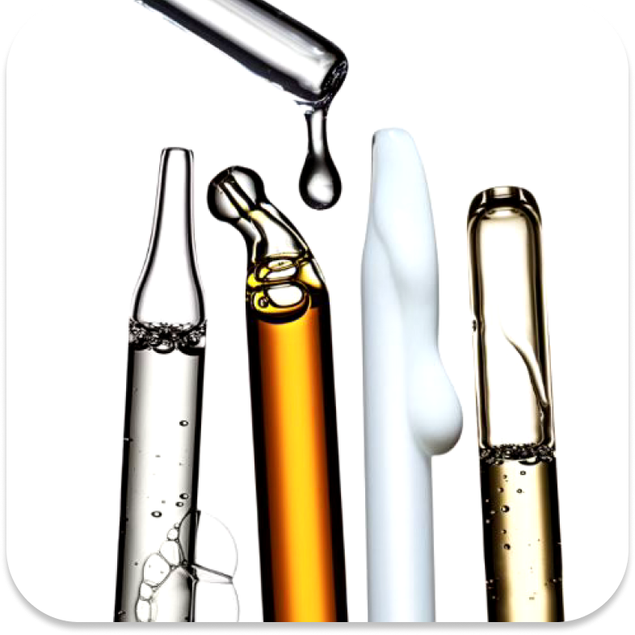
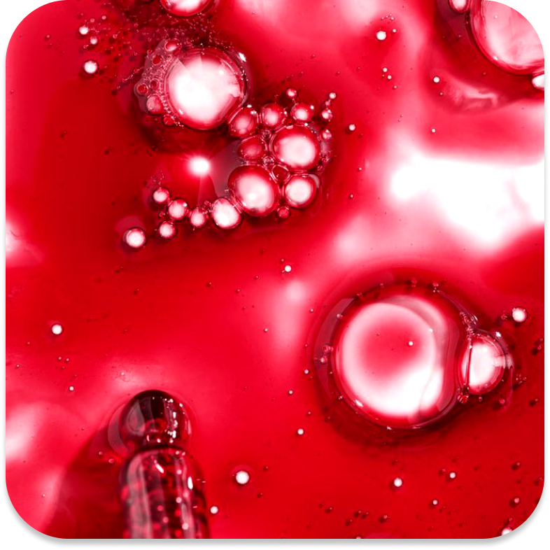
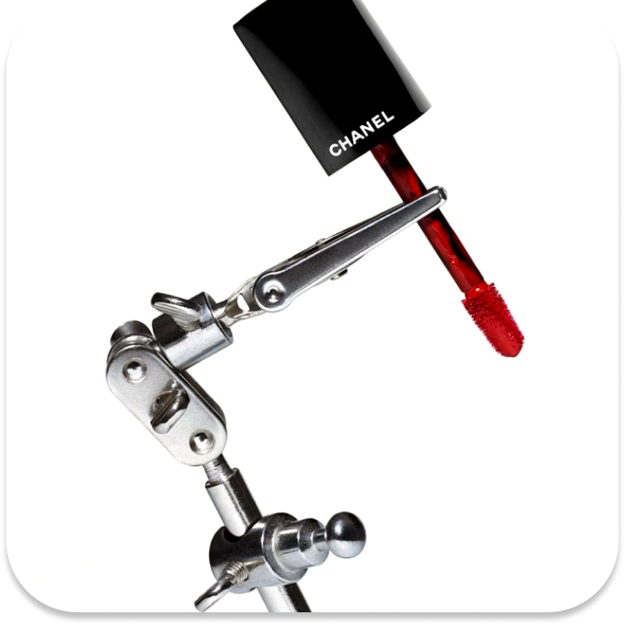

All about lipstick


Lipstick used by Cleopatra.A mixture of red pigment and oil, mainly extracted from carmine (beetle).
World War IIRed lipstick was used to boost women's morale during war.
Medieval europe.Tinted lips with natural ingredients (strawberries, beets, etc.).
Early 20th century1915
Invention of the first metal case lipstick (Maurice Levy).1920s:With flapper culture, red lipstick
emerged as a symbol of liberation and rebellion.
21st centuryClean beauty trends emphasize
organic ingredients and sustainable packaging.

REDAncient Egypt:
Symbol of sanctity and protection.
20th century:
Symbolizing passion, power and provocation.
BLACKA symbol of 20th century goth
culture and rebellion.
PINKA symbol of femininity in the 1950s.Current: Soft and casual image.
Natural color (nude)Modern:
Emphasis on naturalness and “natural beauty.”


 




1920sIn the 1920s, lipstick symbolized rebellion and independence. It became a hallmark of the flapper era, representing women's liberation, modernity, and breaking traditional norms.
1940sIn the 1940s, lipstick became a symbol of resilience and patriotism during wartime. Women wore it to
boost morale, projecting confidence and strength while contributing to the war effort.
Bold red lips
were seen as a sign of femininity and defiance, challenging traditional roles and showing solidarity with
the shifting societal dynamics of the era.
1960-1970sLipstick holds dual significance in feminism. Some reject it as a symbol of imposed beauty standards, resisting societal pressures. Others embrace it as a tool of self-expression and empowerment, highlighting autonomy and choice. This duality makes lipstick both a symbol of oppression and liberation, depending on perspective.
 

Add oil and moisturizing ingredients.
After molding, cooling and packaging into solid form.
Color development is achieved by mixing colorant and wax.
  
Lip gloss
A slightly sticky formulation.
A matte formulation
Lip tint
A lightweight, watery formulation.